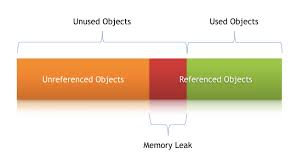
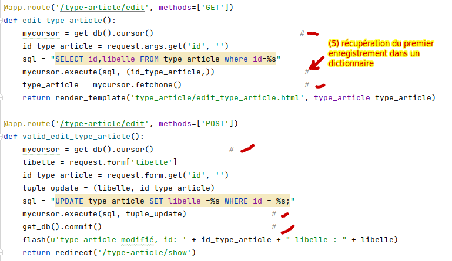

#! /usr/bin/python
# -*- coding:utf-8 -*-
from flask import Flask, request, render_template, redirect, flash
app = Flask(__name__)
app.config["TEMPLATES_AUTO_RELOAD"] = True
app.secret_key = 'une cle(token) : grain de sel(any random string)'
## à ajouter
from flask import session, g
import pymysql.cursors
def get_db():
if 'db' not in g:
g.db = pymysql.connect(
host="localhost", # à modifier
user="login", # à modifier
password="secret", # à modifier
database="BDD_votrelogin", # à modifier
charset='utf8mb4',
cursorclass=pymysql.cursors.DictCursor
)
# à activer sur les machines personnelles :
activate_db_options(g.db)
return g.db
@app.teardown_appcontext
def teardown_db(exception):
db = g.pop('db', None)
if db is not None:
db.close()
def activate_db_options(db):
cursor = db.cursor()
# Vérifier et activer l'option ONLY_FULL_GROUP_BY si nécessaire
cursor.execute("SHOW VARIABLES LIKE 'sql_mode'")
result = cursor.fetchone()
if result:
modes = result['Value'].split(',')
if 'ONLY_FULL_GROUP_BY' not in modes:
print('MYSQL : il manque le mode ONLY_FULL_GROUP_BY') # mettre en commentaire
cursor.execute("SET sql_mode=(SELECT CONCAT(@@sql_mode, ',ONLY_FULL_GROUP_BY'))")
db.commit()
else:
print('MYSQL : mode ONLY_FULL_GROUP_BY ok') # mettre en commentaire
# Vérifier et activer l'option lower_case_table_names si nécessaire
cursor.execute("SHOW VARIABLES LIKE 'lower_case_table_names'")
result = cursor.fetchone()
if result:
if result['Value'] != '0':
print('MYSQL : valeur de la variable globale lower_case_table_names differente de 0') # mettre en commentaire
cursor.execute("SET GLOBAL lower_case_table_names = 0")
db.commit()
else :
print('MYSQL : variable globale lower_case_table_names=0 ok') # mettre en commentaire
cursor.close()L’instruction @app.teardown_appcontext permet d’appeler
la fonction close_connection lorsque que le serveur a fini
de renvoyer une réponse.
Il faut recréer et fermer la connexion à chaque requête HTTP,
sinon il y a un risque de fuite de mémoire

Exemple de code pour ajouter/modifier/supprimer et afficher le contenu de la table “type_article” et début du CRUD sur la table “article”

Complèter sur le même principe, le CRUD pour ajouter/modifier/supprimer et afficher les données de la table article
Pour le “DELETE”, il est possible de faire comme avec le “CRUD”
sur les types d’articles
on désire faire une interface avec des filtres sur les articles